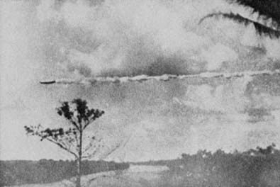

A Willinston, Dakota du Nord, un pilote civil expérimenté
observe un objet elliptique avec une bordure lumineuse descendre rapidement, faire un tour complet puis un demi-tour
Cas
Blue Book n° 1492 non expliqué.
3 objets circulaires noirs apparaissent au-dessus d'Oak Ridge, comme .
Ils sont pris en chasse par des chasseurs F-86. Origine des objets des
objets inconnue.
L'objet de Puerto Maldonado (Pérou) photographié le 19

Au bureau des douanes de Puerto Maldonado (Pérou, à la
frontière en jungle avec la Bolivie), l'attention de l'inspecteur des douanes Domingo Troncoso est attirée par un
objet très étrange en forme de cigare volant
au-dessus de la rivière. Le gros appareil en forme de dirigeable vole horizontalement et assez bas dans le ciel,
passant silencieusement de droite à gauche depuis la position des observateurs. Il laisse une traînée dense de fumée
épaisse, vapeur ou substance dans son sillage. L'objet apparaît comme une machine réelle, structurée, et physique et
l'on peut voir son reflet dans la rivière Madre de Dios en-dessous de lui. La longueur de l'objet est estimée à 100
pieds de long. Sa vitesse est estimée à 1500 km/h.
5 lueurs étranges manœuvrent au-dessus de la Maison Blanche,
de la ville de Washington et de ses environs. Ils sont notamment détectés par le radar de la CAA à l'aéroport. C'est le début de ce que l'on va appeler le carousel de Washington.
Au parc Elkins (Pennsylvanie), le capitaine et pilote de l'USAF C. J. powley et sa femme observent
2 lumières ressemblant à des étoiles manœuvrer, rester stationnaire et accélérer durant Cas
Blue Book n° 1494 non expliqué.